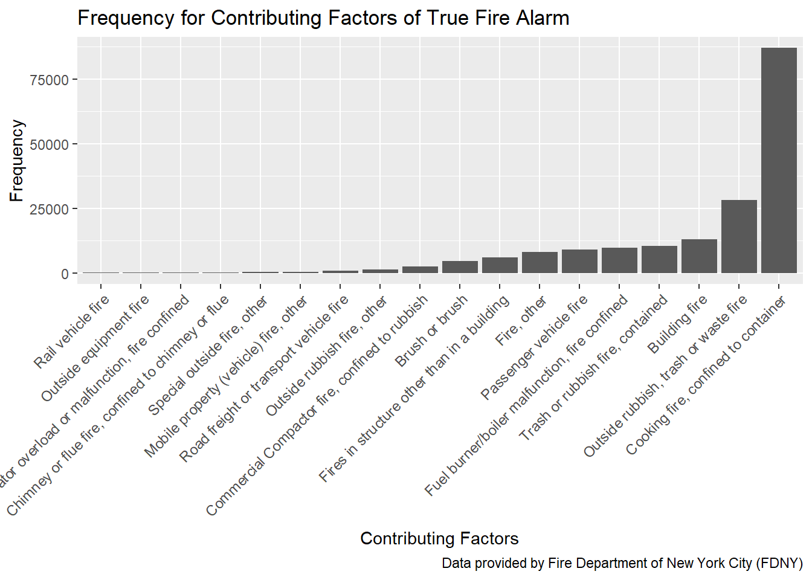

# turn the factor variables with one level to character or integer
fire_data = read.csv(file = "./data/Incidents_Responded_to_by_Fire_Companies.csv") %>%
janitor::clean_names() %>%
mutate(incident_type_desc = as.character(incident_type_desc),
incident_date_time = as.character(incident_date_time),
arrival_date_time = as.character(arrival_date_time),
last_unit_cleared_date_time = as.character(last_unit_cleared_date_time),
action_taken1_desc = as.character(action_taken1_desc),
action_taken2_desc = as.character(action_taken2_desc),
action_taken3_desc = as.character(action_taken3_desc),
property_use_desc = as.character(property_use_desc),
street_highway = as.character(street_highway),
zip_code = as.integer(zip_code),
floor = as.integer(floor)
)# count the frequency of the specific description of incidents and plot with order
fire_factor1 = fire_data %>%
group_by(incident_type_desc) %>%
summarize(count = n()) %>%
arrange(desc(count)) %>%
ungroup() %>%
separate(incident_type_desc, into = c("incident_type", "incident_desc"), sep = "-") %>%
mutate(incident_type = as.integer(incident_type),
incident_desc = forcats::fct_reorder(incident_desc, count))## Warning: Expected 2 pieces. Additional pieces discarded in 13 rows [19, 22,
## 44, 81, 82, 85, 89, 91, 108, 134, 141, 154, 178].## Warning in evalq(as.integer(incident_type), <environment>): NAs introduced
## by coercionfire_factor1 %>%
filter(incident_type >= 100 & incident_type <=199) %>%
filter(count > 100) %>%
select(-incident_type) %>%
knitr::kable()| incident_desc | count |
|---|---|
| Cooking fire, confined to container | 87039 |
| Outside rubbish, trash or waste fire | 28130 |
| Building fire | 13089 |
| Trash or rubbish fire, contained | 10451 |
| Fuel burner/boiler malfunction, fire confined | 9672 |
| Passenger vehicle fire | 8985 |
| Fire, other | 8196 |
| Fires in structure other than in a building | 6092 |
| Brush or brush | 4516 |
| Commercial Compactor fire, confined to rubbish | 2485 |
| Outside rubbish fire, other | 1237 |
| Road freight or transport vehicle fire | 949 |
| Mobile property (vehicle) fire, other | 398 |
| Special outside fire, other | 316 |
| Chimney or flue fire, confined to chimney or flue | 226 |
| Incinerator overload or malfunction, fire confined | 207 |
| Outside equipment fire | 181 |
| Rail vehicle fire | 128 |
fire_factor1 %>%
filter(incident_type >= 100 & incident_type <=199) %>%
filter(count > 100) %>%
ggplot(aes(x = incident_desc, y = count)) +
geom_col() +
theme(axis.text.x = element_text(angle = 45, hjust = 1, size = 9)) +
labs(title = "Frequency for Contributing Factors of True Fire Alarm",
x = "Contributing Factors",
y = "Frequency",
caption = "Data provided by Fire Department of New York City (FDNY)")